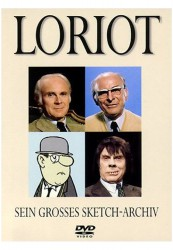

")
 
 IMDB-Wertung: 9.1 / 10
IMDB-Wertung: 9.1 / 10  Metascore:
Metascore: 
Zweimal im Jahr produzierte Loriot für Radio Bremen eine 45-minütige Sendung mit Real- und Zeichentrickszenen, die hauptsächlich den Alltag karikierten, teilweise auch Medien und Politik. Dabei wurden weniger einzelne Personen als vielmehr auffällige Verhaltensweisen parodiert: Bundestagsreden mit vielen Halbsätzen, die nie zu Ende geführt werden und in der Summe ohnehin keinen Inhalt ergeben, und Reporter, die durch unvorhergesehene Antworten ihrer Interviewpartner aus dem Konzept gebracht werden, aber trotzdem hartnäckig an demselben festhalten. Dennoch kamen auch reale Politiker vor: Helmut Schmidt, Franz Josef Strauß und Herbert Wehner waren mal als Zeichentrickfiguren zum Originalton zu sehen, mal umgekehrt mit realen Bildern, aber neu synchronisiert. Die Alltagsszenen versetzten Menschen in peinliche Situationen, lebten von der gnadenlosen Überzeichnung von Eigenarten und der Absurdität des Augenblicks.
Jahr: 1976
Dauer: 87 Minuten
FSK:
Land: West-Deutschland Studio: ARDTonspuren:
Untertitel:
Auflösung: SD (576x416) Größe: 128000 MB
Regisseur: Vicco von Bülow
Drehbuch: Thames Television
Soundtrack:
Darsteller:
Datei: X:\Dokumentationen\Comedy\Loriot Disc 1-6\s-l-d1-xvid.avi seit 24.01.2017
Festplatte: HD Serien(SU-Z)+Dokus+Musik
 Es gibt insgesamt 30 Filme in der Gruppe 'Dokumentationen\Comedy'
Es gibt insgesamt 30 Filme in der Gruppe 'Dokumentationen\Comedy'